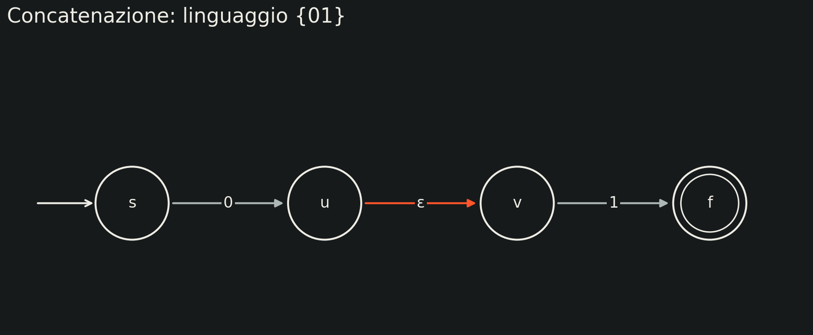
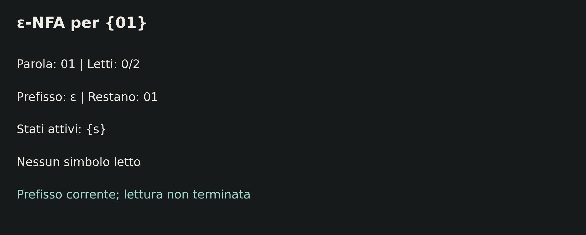
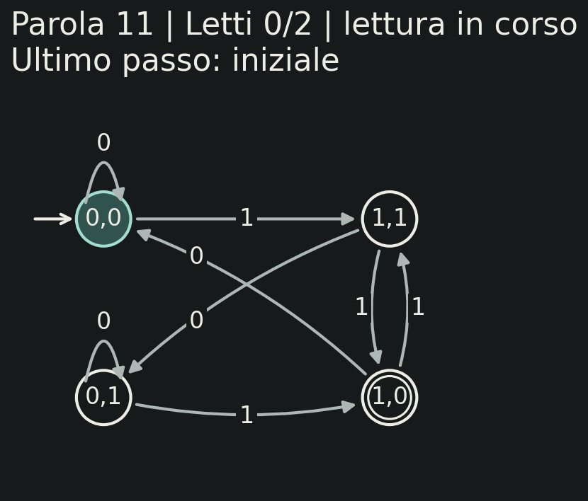
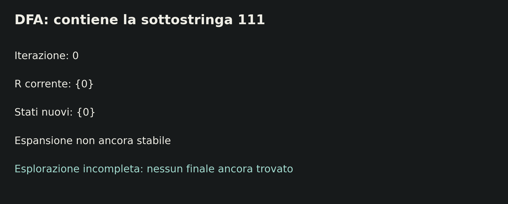

Linguaggi regolari e problemi di decisione
Linguaggi regolari e problemi di decisione
VVT · Lezione 2 · Capitolo 2
Obiettivo: costruire automi, decidere inclusioni e spiegare la memoria minima.
Percorso: espressioni → automi → raggiungibilità → Myhill–Nerode.
Richiamo: accettazione su parole finite
Un DFA ha una sola run; un NFA può averne più di una.
Una parola è accettata se almeno una run termina in uno stato finale, dopo aver consumato tutto l’input.
L(\mathcal A)\subseteq\Sigma^*
Useremo \Sigma=\{0,1\}. La parola vuota è \varepsilon; il complemento è sempre relativo all’alfabeto dichiarato.
Sintassi delle espressioni regolari
Le espressioni ristrette partono da:
\varnothing,\qquad \varepsilon,\qquad a\in\Sigma
Se r e s sono espressioni, anche r+s, rs e r^* lo sono.
Il simbolo + indica unione. La stella ha precedenza sulla concatenazione, che precede l’unione; le parentesi eliminano ambiguità.
Semantica delle espressioni regolari
L(\varnothing)=\varnothing,\quad L(\varepsilon)=\{\varepsilon\},\quad L(a)=\{a\}
L(r+s)=L(r)\cup L(s)
L(rs)=L(r)L(s),\qquad L(r^*)=L(r)^*
\varnothing non contiene parole; \varepsilon descrive una parola di lunghezza zero. La stella consente sempre zero ripetizioni.
Espressioni per suffisso e parità
(0+1)^*01
Descrive le parole che terminano con 01: accetta 01, 1101; rifiuta ε, 010.
0^*(10^*10^*)^*
Descrive le parole con un numero pari di 1: ogni blocco ripetuto contribuisce due 1. Sono incluse ε e tutte le parole composte solo da 0.
Espressioni generali e star-free
Le espressioni generali aggiungono intersezione e complemento:
L(r\cap s)=L(r)\cap L(s),\qquad L(\overline r)=\Sigma^*\setminus L(r)
Le espressioni star-free ammettono questi operatori booleani, ma non la stella.
Star-free non significa linguaggio finito: \overline{\varnothing} descrive \Sigma^*. Le espressioni generali hanno la stessa potenza delle ristrette; le star-free ne hanno meno.
Transizioni ε e composizione
Una transizione \varepsilon cambia stato senza consumare simboli. Non aggiunge un simbolo all’alfabeto.
Per concatenare gli automi per 0 e 1, colleghiamo l’uscita del primo all’ingresso del secondo. Solo l’ultima uscita resta accettante.
Il doppio cerchio indica uno stato finale; la freccia esterna indica l’iniziale.

Chiusura ε come punto fisso
\operatorname{ECl}(S) contiene tutti gli stati raggiungibili da S usando zero o più transizioni ε.
X_0=S,\qquad X_{i+1}=X_i\cup\bigcup_{q\in X_i}\Delta(q,\varepsilon)
Si arresta quando X_{i+1}=X_i. Nel diagramma precedente:
\operatorname{ECl}(\{u\})=\{u,v\}
Lo stato di partenza appartiene sempre alla propria chiusura.
Simulazione di un ε-NFA
Prima di leggere e dopo ogni simbolo, calcoliamo la chiusura ε.
- In Parola scegli
01; Letti conta i simboli consumati, da0a2, inizialmente0. - A
0l’insieme attivo è{s}. A1diventa{u,v}: è stato consumato solo0. - A
2rimane{f}e la parola è accettata. - Scegli
0: il cursore si azzera e il massimo diventa1. Al termine{u,v}non contiene finali.
Il caso ε termina subito in {s} ed è rifiutato.

Eliminare le transizioni ε
Manteniamo gli stati, ma ogni passo ordinario assorbe i passi ε precedenti e successivi:
\Delta'(q,a)=\operatorname{ECl}\left(\bigcup_{p\in\operatorname{ECl}(\{q\})}\Delta(p,a)\right)
Nell’esempio: \Delta'(s,0)=\{u,v\} e \Delta'(u,1)=\{f\}.
Il nuovo NFA legge solo simboli reali. Va controllata separatamente l’accettazione della parola vuota.
Eliminazione ε: il caso della parola vuota
Con la convenzione precedente manteniamo F, aggiungendo q_0 se la sua chiusura ε incontra F.
Esempio: due stati i, f, con una sola freccia ε da i a f; solo f è finale.
L’automa accetta ε. Eliminando la freccia senza correggere i finali, la rifiuterebbe.
Rendendo finale anche i, il linguaggio rimane esattamente \{\varepsilon\}.
empty_example = enfa({'i','f'}, {('i', EPS): {'f'}}, 'i', {'f'})
ordinary = remove_epsilon(empty_example)
print('Finali dopo la rimozione:', names(ordinary['final']))
print('ε accettata:', bool(enfa_run(ordinary, '')[-1] & ordinary['final']))
print('0 accettata:', bool(enfa_run(ordinary, '0')[-1] & ordinary['final']))Finali dopo la rimozione: {f, i}
ε accettata: True
0 accettata: FalseTeorema di Kleene: le due costruzioni
Un linguaggio su parole finite è riconosciuto da un automa finito se e solo se è descritto da un’espressione regolare ristretta.
- Espressione → automa: costruzione strutturale di Thompson.
- Automa → espressione: ricorrenza sui possibili stati intermedi.
Entrambe sono procedure effettive. Si può passare da ε-NFA a NFA, poi a DFA, conservando il linguaggio.
Thompson: casi base e invariante
Ogni frammento ha un ingresso e una sola uscita accettante, inizialmente priva di archi uscenti.
- \varnothing: ingresso e uscita senza un cammino che li colleghi.
- \varepsilon: un arco ε dall’ingresso all’uscita.
- a: un arco etichettato a dall’ingresso all’uscita.
I frammenti da comporre devono avere insiemi di stati disgiunti.
Thompson: unione, concatenazione e stella
Unione r+s: un nuovo ingresso sceglie con ε uno dei due frammenti; le vecchie uscite raggiungono una nuova uscita.
Concatenazione rs: colleghiamo l’uscita di r all’ingresso di s con ε.
Stella r^*: aggiungiamo ingresso e uscita nuovi; consentiamo di saltare il frammento, attraversarlo, ripeterlo e uscire.
Il salto diretto ingresso → uscita realizza le zero ripetizioni.
Compilare un’espressione in Python
Compiliamo r=(0+1)^*01 e poi rimuoviamo ε e determinizziamo.
Il codice rappresenta la sintassi con tuple: lit è un simbolo, plus è unione, cat è concatenazione, star è stella.
La prova finita confronta il DFA con la proprietà «termina con 01». La correttezza generale deriva dalla costruzione di Thompson.
zero, one = ('lit','0'), ('lit','1')
regex = ('cat', ('star', ('plus', zero, one)), ('cat', zero, one))
compiled_e = thompson(regex)
compiled_d = determinize(remove_epsilon(compiled_e))
for w in words():
assert accepts(compiled_d, w) == w.endswith('01')
print('Stati ε-NFA:', len(compiled_e['states']))
print('Stati DFA raggiungibili:', len(compiled_d['states']))
print('255 parole confrontate con il predicato del suffisso.')Stati ε-NFA: 12
Stati DFA raggiungibili: 4
255 parole confrontate con il predicato del suffisso.Da automa a espressione: stati intermedi
Numeriamo gli stati q_1,\ldots,q_n.
R_{ij}^{k} descrive le parole dei cammini da q_i a q_j che usano come stati intermedi solo q_1,\ldots,q_k.
Gli estremi non sono vincolati. Con k=0 sono ammessi solo archi diretti e il cammino vuoto da uno stato a sé stesso.
Quindi R_{ij}^{0} è l’unione delle etichette dirette, con ε aggiunta quando i=j.
Ricorrenza per la traduzione in espressione
Sbloccando q_k come nuovo stato intermedio, un cammino può evitarlo oppure entrarvi, ritornarvi e uscire.
R_{ij}^{k}=R_{ij}^{k-1}+R_{ik}^{k-1}(R_{kk}^{k-1})^*R_{kj}^{k-1}
La stella rappresenta un numero finito qualsiasi di ritorni.
Alla fine si uniscono R_{1j}^{n} per tutti i finali q_j, assumendo q_1 iniziale.
Ricorrenza sul DFA della parità
Nel DFA della parità di 1, q_1 è pari e q_2 dispari. 0 conserva lo stato, 1 lo cambia.
R_{11}^{0}=R_{22}^{0}=\varepsilon+0,\qquad R_{12}^{0}=R_{21}^{0}=1
Sbloccando q_1:
R_{22}^{1}=(\varepsilon+0)+1(\varepsilon+0)^*1
Sono inclusi ε, 0, 11, 101; 00 richiede un passaggio intermedio per q_2 e non è ancora incluso.
Chiusure dei linguaggi regolari
Se L_1 e L_2 sono regolari sullo stesso alfabeto, sono regolari anche:
L_1\cup L_2,\quad L_1L_2,\quad L_1^*,\quad \overline{L_1},\quad L_1\cap L_2
Unione, concatenazione e stella seguono dalle costruzioni già viste.
Complemento e intersezione permettono di combinare requisiti. Con Kleene, dimostrano che gli operatori delle espressioni generali non aggiungono potere espressivo.
Complemento: serve un DFA completo
Per un DFA completo basta sostituire F con Q\setminus F.
Ogni parola ha esattamente una run completa: il suo verdetto viene invertito.
DFA parziale per {1}: solo s —1→ f, con f finale. Scambiando i finali si accetta solo ε: 0 continua a non avere run.
Prima bisogna aggiungere uno stato pozzo e tutte le transizioni mancanti.
Perché lo scambio dei finali fallisce su un NFA
Considera un NFA con iniziale s, finale f, e transizioni:
- da
s, con0, resta ins; - da
s, con1, può restare insoppure andare inf; - da
f, con0o1, resta inf.
Accetta le parole che contengono 1. Dopo lo scambio accetta ancora 1 tramite il ramo che resta in s.
Procedura corretta: determinizzare → completare → scambiare.
Intersezione mediante prodotto
Lo stato del prodotto è una coppia: ricorda entrambi gli stati raggiunti dopo lo stesso prefisso.
\delta((p,q),a)=(\delta_1(p,a),\delta_2(q,a))
Per l’intersezione, lo stato iniziale è (q_{01},q_{02}) e i finali sono:
F=F_1\times F_2
Entrambi i componenti devono accettare al termine della stessa parola.
Simulazione del prodotto
Primo componente: 1 se il prefisso termina con 1, altrimenti 0. Secondo: 0 se il numero di 1 è pari, 1 se dispari. Solo (1,0) è finale.
- Scegli Parola
11; Letti va da0a2, inizialmente0. - A
1compare(1,1); a2compare(1,0): accettata. - Scegli
110: Letti torna a0, massimo3. A3compare(0,0): rifiutata.
ε parte e termina in (0,0), quindi è rifiutata. La parità da sola non basta.

Comporre requisiti per l’editor
Riprendiamo l’alfabeto di eventi apri, modifica, salva, chiudi.
r_{\mathrm{sessione}}=\mathrm{apri}\;(\mathrm{modifica}+\mathrm{salva})^*\;\mathrm{chiudi}
Il requisito «contiene almeno un salvataggio» è \Sigma^*\;\mathrm{salva}\;\Sigma^*.
Il prodotto accetta le sessioni ordinate con almeno un salvataggio. Una parola più corta possibile è apri, salva, chiudi.
Questo requisito non impone di salvare ogni modifica.
Problemi di decisione su automi
- Appartenenza: questa parola è accettata?
- Vuotezza: esiste almeno una parola accettata?
- Universalità: sono accettate tutte le parole di \Sigma^*?
- Inclusione: ogni parola di L_1 appartiene a L_2?
- Equivalenza: i due linguaggi coincidono?
L’appartenenza usa la simulazione. Per la vuotezza basta chiedere se un finale è raggiungibile dall’iniziale.
Ricerca in ampiezza e parola testimone
Una BFS esplora gli stati per distanza dall’iniziale. Memorizziamo, per ogni stato nuovo, predecessore e simbolo usato.
Appena raggiungiamo un finale, ricostruiamo una parola accettata di lunghezza minima.
Attenzione al risultato: None significa linguaggio vuoto; '' significa che ε è un testimone.
for label, machine in [('prodotto', PAIR), ('parità', PARITY)]:
witness = shortest_witness(machine)
print(label, '→', 'linguaggio vuoto' if witness is None else shown(witness))
impossible = dfa_product(ENDS, complement(CONTAINS))
assert shortest_witness(impossible) is None
print('Termina con 1 e non contiene 1 → linguaggio vuoto')prodotto → 11
parità → ε
Termina con 1 e non contiene 1 → linguaggio vuotoProprietà del testimone corto
Un DFA con n stati ha linguaggio non vuoto se e solo se accetta una parola w con:
|w|<n
In una run accettante minima nessuno stato si ripete: il tratto fra due visite allo stesso stato potrebbe essere eliminato.
Quindi la run contiene al massimo n stati e la parola al massimo n-1 simboli.
Raggiungibilità come punto fisso
\operatorname{Post}(R) contiene i successori in un passo degli stati in R.
R_0=\{q_0\},\qquad R_{i+1}=R_i\cup\operatorname{Post}(R_i)
R_i raccoglie gli stati raggiungibili con parole di lunghezza al massimo i. Il primo insieme stabile R^* contiene tutti gli stati raggiungibili.
L(\mathcal A)\ne\varnothing\quad\Longleftrightarrow\quad R^*\cap F\ne\varnothing
Esplorazione del punto fisso
Il DFA ricorda quanti 1 consecutivi chiudono il prefisso: 0, 1, 2; 3 significa che 111 è già comparso e resta assorbente. Solo 3 è finale.
Iterazione seleziona R_i: valori da 0 a 4, inizialmente 0.
- A
1, R_1=\{0,1\}; a2, R_2=\{0,1,2\}. - A
3compare il finale3: il linguaggio è non vuoto, testimone111. - A
4non cambia nulla: il punto fisso è raggiunto.
Prima di 3, non avere ancora trovato un finale non prova la vuotezza.

Riduzioni alla vuotezza
Le chiusure trasformano le domande sui linguaggi in ricerca di testimoni:
L_1\subseteq L_2\quad\Longleftrightarrow\quad L_1\cap\overline{L_2}=\varnothing
L=\Sigma^*\quad\Longleftrightarrow\quad\overline L=\varnothing
L’equivalenza richiede entrambe le inclusioni. In alternativa, cerchiamo una parola accettata da uno solo dei due automi.
Per l’inclusione, ogni parola del prodotto con il complemento è un controesempio concreto.
Inclusione e controesempio eseguibile
Siano L_E le parole che terminano con 1 e L_C quelle che contengono 1.
L_E\subseteq L_C: il prodotto con il complemento di L_C non ha finali raggiungibili.
Il verso opposto fallisce: 10 contiene 1, ma non termina con 1.
La BFS trova un testimone minimo della violazione; non esamina un insieme di test scelti a mano.
for label, left, right in [('E ⊆ C', ENDS, CONTAINS), ('C ⊆ E', CONTAINS, ENDS)]:
bad = dfa_product(left, complement(right))
witness = shortest_witness(bad)
print(label, '→', 'vera' if witness is None else 'falsa, controesempio: '+shown(witness))
if witness is not None:
assert accepts(left, witness) and not accepts(right, witness)E ⊆ C → vera
C ⊆ E → falsa, controesempio: 10Costo delle procedure e rappresentazione
Su un grafo esplicito con n stati e m archi, la BFS costa O(n+m).
Per due DFA, un prodotto ha al massimo n_1n_2 stati; si possono esplorare solo quelli raggiungibili.
Per gli NFA, complemento, inclusione ed equivalenza possono richiedere la determinizzazione, con fino a 2^n sottoinsiemi.
«Riducibile a raggiungibilità» non significa avere sempre un grafo piccolo.
Equivalenze, classi e indice
Una relazione di equivalenza è riflessiva, simmetrica e transitiva. Le sue classi formano una partizione: non si sovrappongono e coprono tutto l’insieme.
L’indice è il numero delle classi.
Esempio: raggruppare le parole per parità della lunghezza dà due classi.
«Condividono un simbolo» non è transitiva: 0 condivide con 01, 01 con 1, ma 0 non condivide con 1.
Invarianza a destra e compatibilità
Per rappresentare classi di prefissi come stati servono due proprietà.
Invarianza a destra:
x\sim y\quad\Longrightarrow\quad xz\sim yz\quad\text{per ogni }z\in\Sigma^*
Compatibilità con L: prefissi nella stessa classe appartengono entrambi a L, oppure entrambi ne sono fuori.
La prima rende coerenti le transizioni; la seconda rende coerente il verdetto.
Equivalenza di Myhill–Nerode
Due prefissi sono equivalenti per L quando nessuna continuazione distingue i loro verdetti:
x\sim_L y\quad\Longleftrightarrow\quad\forall z\in\Sigma^*:\;(xz\in L\Longleftrightarrow yz\in L)
Per il linguaggio «termina con 1», 01 e 11 sono equivalenti.
0 e 01 sono distinti: basta z=\varepsilon. Accettare o rifiutare entrambi adesso non garantisce invece che due prefissi siano equivalenti.
Confrontare i futuri di due prefissi
Usiamo il linguaggio «numero pari di 1».
Coppia seleziona ε / 1, 1 / 01 o ε / 11, inizialmente ε / 1. Suffisso seleziona ε, 0, 1, 01, inizialmente ε.
- Con
ε / 1e suffissoε, i verdetti differiscono: i prefissi sono distinguibili. - Scegli
1 / 01mantenendoε: entrambi rifiutano. Con suffisso1, entrambi accettano. - I due prefissi restano equivalenti per ogni suffisso perché hanno la stessa parità, non perché abbiamo provato quattro casi.

Teorema di Myhill–Nerode
Per L\subseteq\Sigma^* sono equivalenti:
- L è regolare.
- Esiste un’equivalenza di indice finito, invariante a destra e compatibile con L.
- L’equivalenza \sim_L ha indice finito.
Un DFA fornisce una classificazione finita dei prefissi. Myhill–Nerode conserva soltanto le distinzioni che qualche continuazione può osservare.
Costruire il DFA delle classi
Se \sim_L ha indice finito, usiamo le sue classi come stati.
- Stato iniziale: [\varepsilon].
- Transizione: \delta([w],a)=[wa].
- Classe accettante: [w] con w\in L.
L’invarianza a destra rende la transizione indipendente dal rappresentante. La compatibilità rende ben definito l’insieme dei finali.
Dopo aver letto w, lo stato è [w]: il DFA riconosce esattamente L.
Minimalità del DFA delle classi
Se due prefissi appartengono a classi di Myhill–Nerode diverse, un suffisso li distingue. Qualunque DFA per L deve quindi portarli in stati diversi.
Ogni DFA per L ha almeno tanti stati quante sono le classi di \sim_L. Il DFA delle classi raggiunge questo limite.
Per «termina con 1» ci sono due classi: prefissi che terminano con 1 e tutti gli altri, inclusa ε. Due stati sono necessari e sufficienti.
Non regolarità mediante prefissi distinguibili
Considera il linguaggio delle parole con tanti 0 quanti 1.
Prendiamo i prefissi x_n=0^n, per ogni n\geq0.
Se m\ne n, il suffisso z=1^n distingue x_n da x_m:
0^n1^n\in L,\qquad 0^m1^n\notin L
Esistono infinite classi di Myhill–Nerode. Dunque il linguaggio non è regolare, anche se il suo predicato di appartenenza è facile da calcolare.
Esercizi di autoverifica
- Che linguaggi descrivono \varnothing^* e \varepsilon+01?
- Due stati, iniziale e finale, sono collegati solo da ε: che correzione conserva l’accettazione della parola vuota dopo la rimozione ε?
- Trova la parola minima che termina con
1e contiene un numero pari di1. - Per il linguaggio «contiene
1»,εe0sono equivalenti? Eεe1? - Quale prodotto verifica L_C\subseteq L_E e quale controesempio trova?
Spiega a voce le ragioni prima di passare alle soluzioni.
Soluzioni e verifica degli algoritmi
- \varnothing^* descrive \{\varepsilon\}; \varepsilon+01 descrive \{\varepsilon,01\}.
- Con la nostra formula per \Delta', rendiamo finale anche l’iniziale.
11: un solo1dà parità dispari.εe0hanno gli stessi futuri;εe1sono distinti già dal suffisso vuoto.- Prodotto di C con il complemento di E: testimone minimo
10.
Il controllo seguente confronta costruzioni e predicati su tutte le 255 parole binarie fino a lunghezza 7.
print('Verifica completata: 255 parole e 10 espressioni.')
print('ε-NFA, rimozione ε e DFA concordano con i predicati diretti.')
print('BFS, inclusioni, testimone vuoto e punto fisso: controlli passati.')Verifica completata: 255 parole e 10 espressioni.
ε-NFA, rimozione ε e DFA concordano con i predicati diretti.
BFS, inclusioni, testimone vuoto e punto fisso: controlli passati.Riepilogo e collegamento alla verifica
- Espressioni regolari e automi finiti descrivono gli stessi linguaggi.
- Le transizioni ε rendono modulari le costruzioni e si possono eliminare.
- Complemento e prodotto compilano requisiti booleani.
- L’inclusione si decide cercando un comportamento ammesso dal sistema e vietato dalla specifica.
- Myhill–Nerode identifica la memoria minima necessaria.
Nel capitolo 3 passeremo alle parole infinite: il momento finale di accettazione non sarà più disponibile.